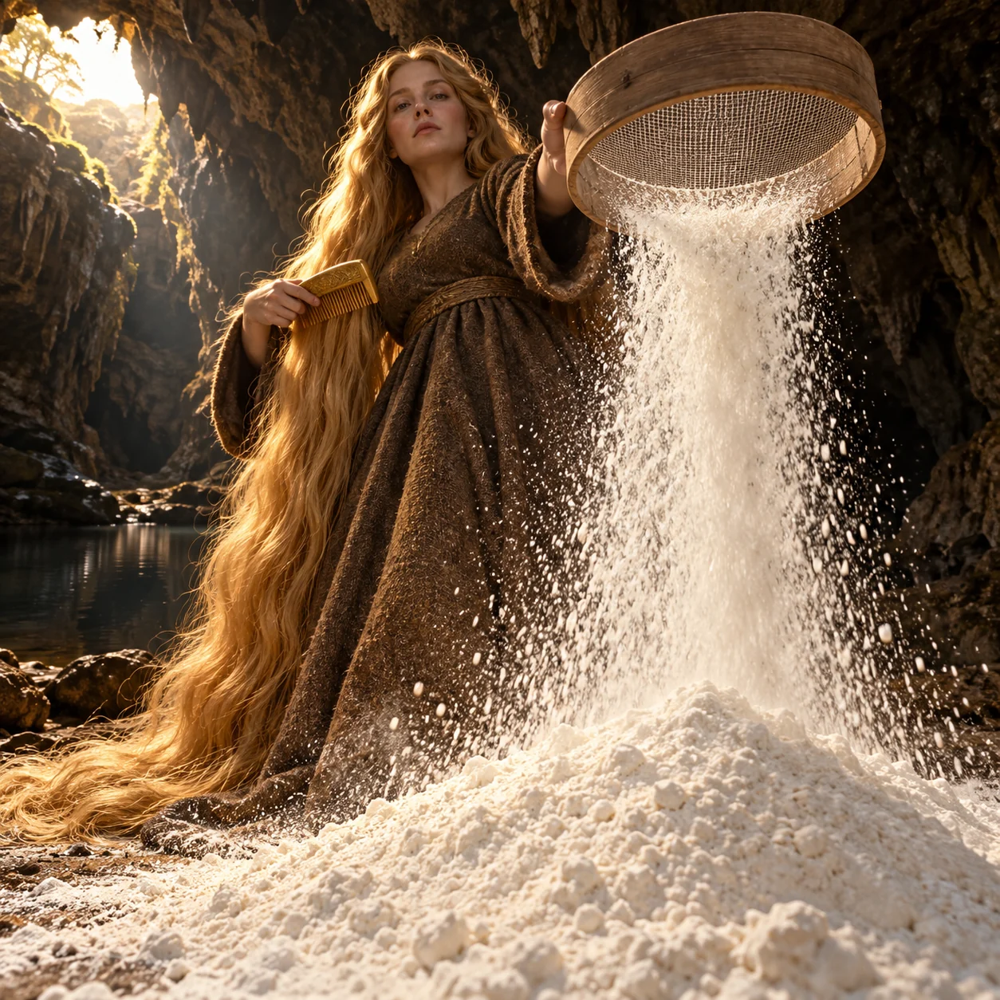
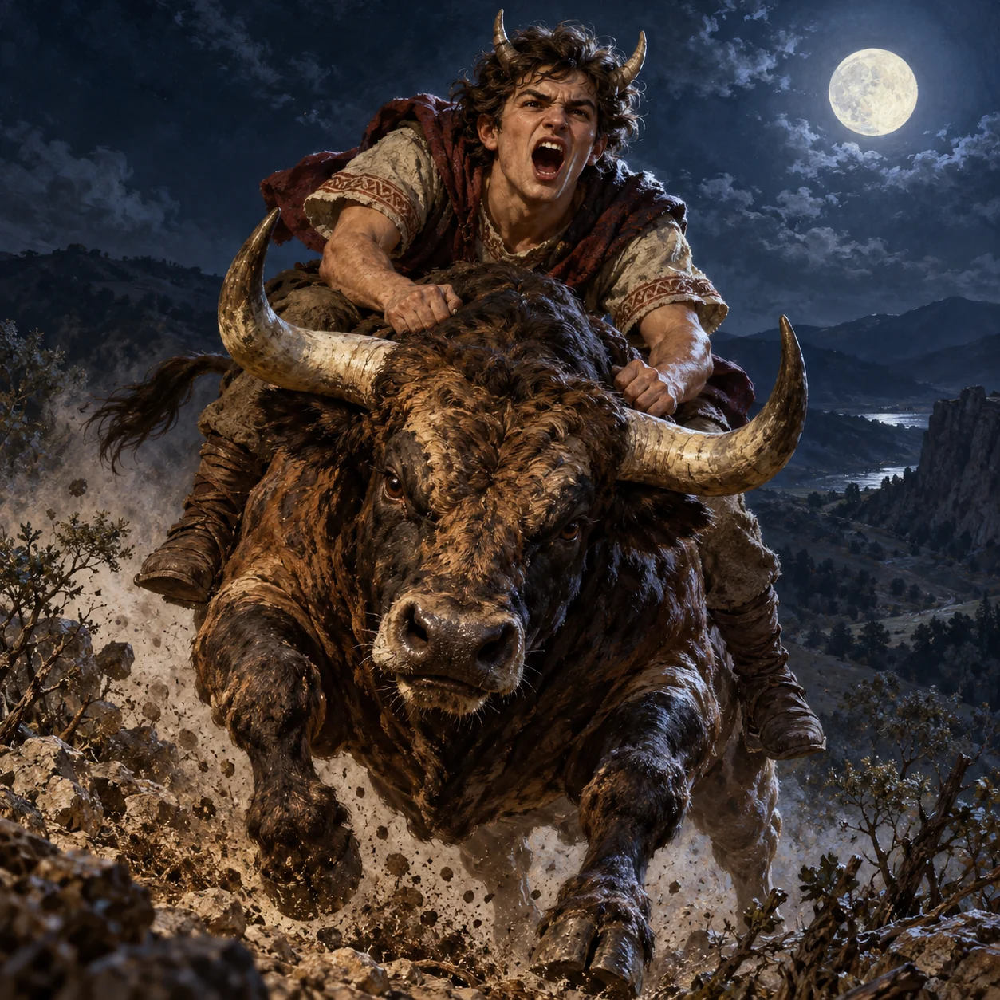
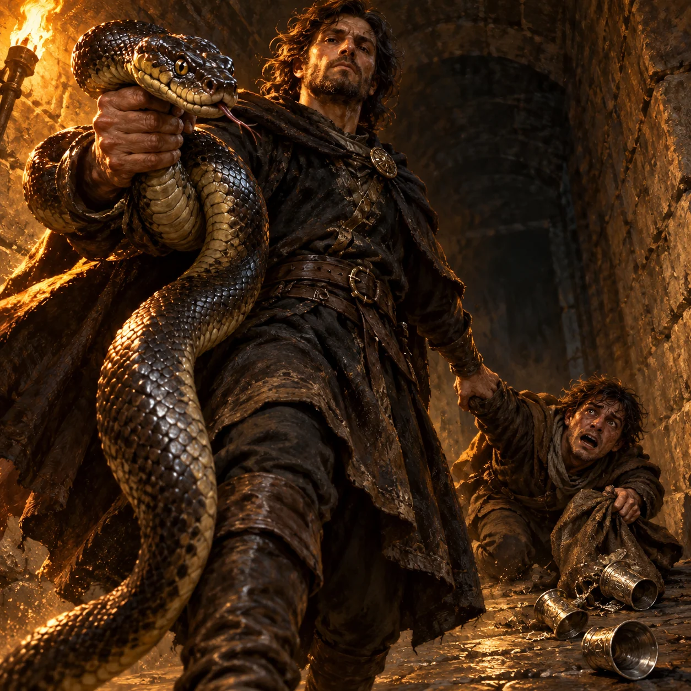
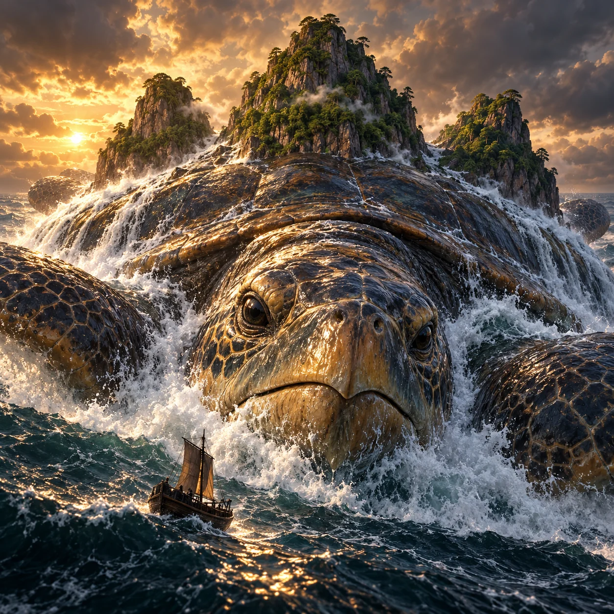
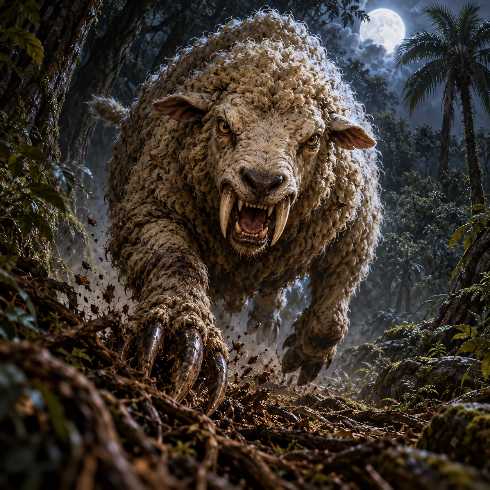
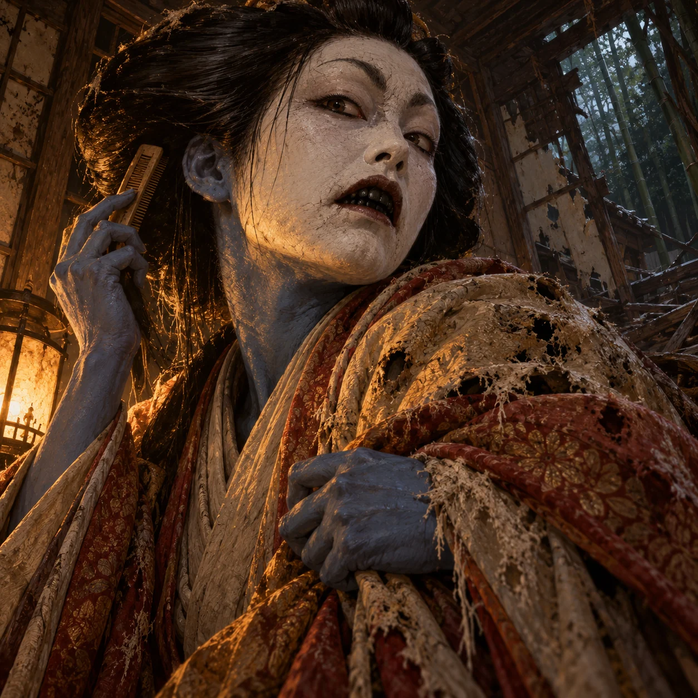
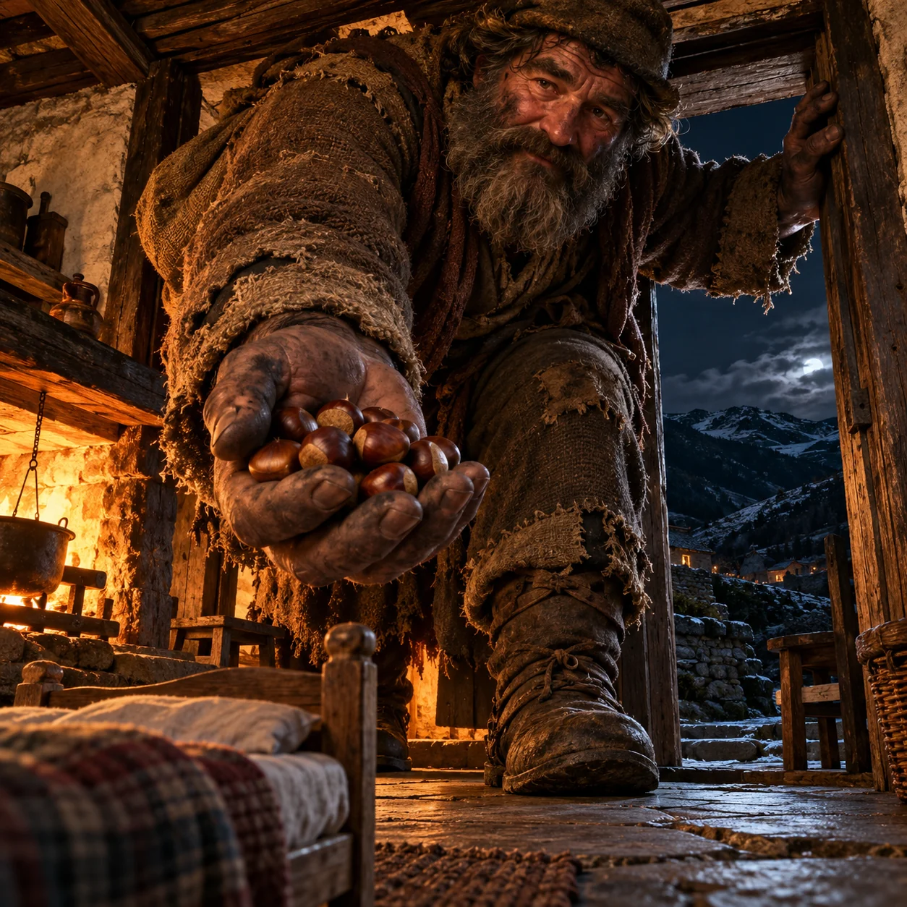
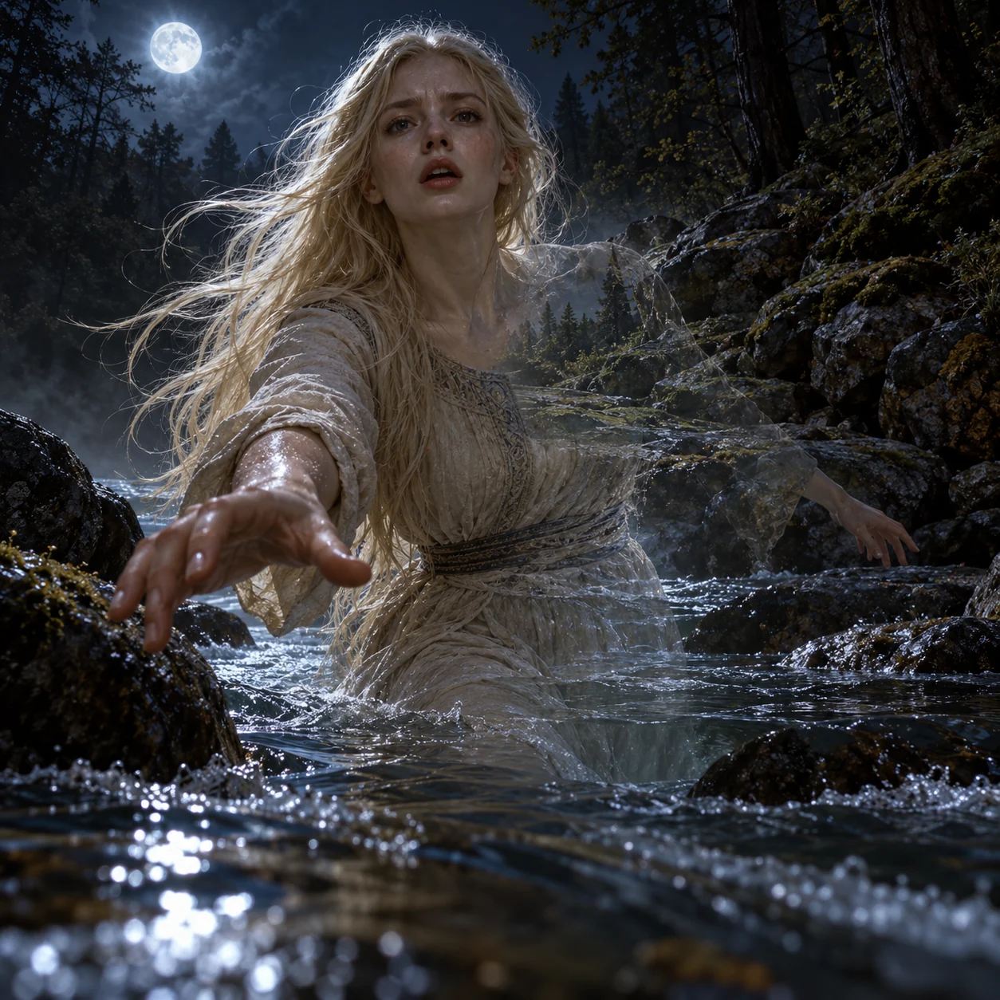

Ame no Hiwashi
Menunggu gambar yang lolos audit
8/10 lolos audit dan terpasang. Semua karakter dipilih dari entri dengan informasi lengkap. Ilustrasi adalah interpretasi artistik AI berdasarkan sumber riset.

golden-haired benevolent cave spirit with inexhaustible flour sieve
Aura: A thick continuous waterfall of FLOUR pours from an visibly EMPTY sieve, flour lands in a large real powder heap at bottom foreground; dry white flour powder with falling grains, no water or light beams. Her documented inexhaustible flour-giving sieve supports the poor amilamia-c04,amilamia-c05
Native and 200px inspected. Golden floor-length hair and gold comb c02; one head two arms, legs concealed by opaque dress. Empty visible mesh sieve produces immense physical flour cascade c04, cave/pool c01/c02. Benevolent spirit c05: awe comes from abundant documented miracle and low angle; no giant scale or invented magic. All seven Sangar checks yes, no text.
Review sumberONE original square premium painterly cinematic Mitoloka illustration of Amilamia, golden-haired benevolent cave spirit with inexhaustible flour sieve. ANATOMY: One woman with long golden-blond hair reaching the ground, one head two eyes two arms two legs under fully opaque plain earth-brown long wool dress; one golden comb in one hand and one EMPTY wooden sieve held high in other hand; no horns wings animal feet or invented anatomy [amilamia-c02] MOMENT: Raise the empty sieve toward viewer while combing long hair with golden comb, face grave and compassionate, falling flour crosses lower foreground, hair sweeps downward to ground. Empty upper mesh of sieve visible, nothing inside it although flour pours beneath POWER: A thick continuous waterfall of FLOUR pours from an visibly EMPTY sieve, flour lands in a large real powder heap at bottom foreground; dry white flour powder with falling grains, no water or light beams. Her documented inexhaustible flour-giving sieve supports the poor [amilamia-c04, amilamia-c05] SCALE & CAMERA: extreme low angle, close foreshortened framing; normal human size, dominance through close framing only, no giant scale. LIGHT & WEATHER: one low warm shaft from cave mouth, sharp rim light, deep shadows, dark walnut and antique gold with one strong accent. SURFACE: real long golden hair, rough opaque wool, plain wood and open sieve mesh, dry flour dust and damp limestone. SETTING: Lezao cave beside a dark reflecting pool; hair touches cave floor [amilamia-c01, amilamia-c02] MOOD: benevolent and awe-inspiring, imposing supernatural presence, never evil, cute, calm or decorative. HARD CONSTRAINTS: no text, writing, lettering, glyphs, inscriptions, pseudoinscriptions, symbols, logo, border, frame or watermark; no extra heads, eyes or limbs; no design borrowed from film, game, anime or comic; no nudity or explicit gore; no generic glow aura, neon outline, floating runes or energy ribbons.

Ampelos, the horned young satyr riding the wild bull in Nonnus
Aura: Threat or awe through documented anatomy ['ampelos-c02', 'ampelos-c04', 'ampelos-c06', 'ampelos-c08'] and action ['ampelos-c08', 'ampelos-c09']; no generic aura.
Native and 200px inspected: Ampelos is visibly a two-horned beardless satyr, fully clothed, shouting his bold boast while gripping the charging bull. Two arms and two booted legs distinct; bull has two horns, natural mammalian four-limb structure and one tail. Pair dominates frame in violent gallop, dirt only c08/c09, no magic, giant scale, text or gore. Both satyr horns remain separate at thumbnail. All seven Uji Sangar answers yes.
Review sumberONE original square premium painterly cinematic Mitoloka illustration of Ampelos, the horned young satyr riding the wild bull in Nonnus. ANATOMY: Exactly one young adult beardless male satyr with one youthful face, two eyes, two clearly separated short straight horns projecting upward from each temple, unobstructed by hair, two arms and two legs; opaque rough ancient Thracian tunic and trousers cover torso/legs; no invented goat legs or extra limbs. He rides exactly one powerful wild bull with one head, two natural horns, four legs and one tail. [ampelos-c02, ampelos-c04, ampelos-c06, ampelos-c08] MOMENT: Cling to the galloping bull as it bucks toward viewer over rough ground, Ampelos defiantly SHOUTS his boast toward the moon, mouth open, brows fiercely drawn; his upper body leans toward camera while both hands grip the bull neck. BOTH satyr horns have clear silhouettes against empty sky on either side of his head. POWER: No magical effects; the documented murderous bull gallops violently after being stung, real dirt and broken brush kicked up. [ampelos-c08, ampelos-c09] SCALE & CAMERA: Extreme low angle, extremely tight close confrontation: Ampelos face, both horns and shoulders occupy the upper HALF of frame, the charging bull head and lunging forelegs occupy lower half. Ampelos is equally prominent with bull, not a tiny rider. Separate the four bull legs cleanly with no overlap where visible. LIGHT & WEATHER: one dominant cold moonlight source, sharp rim light, deep warm walnut shadows, natural dust or mist. SURFACE: tactile coarse weathered surfaces, rich painterly texture, no plastic finish. SETTING: Ismarian hills in Thrace at night under the moon. [ampelos-c06, ampelos-c08] MOOD: menacing or awe-inspiring, dangerous and imposing, never cute, calm or decorative. HARD CONSTRAINTS: no text, pseudoinscriptions, lettering, logo, border, frame or watermark; no extra heads, limbs or fingers; no design borrowed from film, game, anime or comic; opaque full clothing for humanoids; no nudity or explicit gore; no generic glow aura, neon outline, energy ribbons or magic symbols.

Goetic human earl holding a large serpent, returning a thief and stolen goods.
Aura: Serpent attribute c03/c05 and active return of thief and goods c04/c05 create threat.
Native and 200px inspected: human earl with two arms/legs and normal face, one large serpent held behind its single head in right hand; left hand returns thief by wrist, stolen cups and sack read behind. Strong advancing stride and serpent close to camera c03/c05 differentiate from ordinary passer-by; no invented horns/glow/giant body. Cups carry ornamental texture, no legible text. All seven Sangar checks pass.
Review sumberONE original square premium painterly cinematic Mitoloka illustration of Andromalius, the formidable Goetic earl who appears as a man holding a large serpent and recovers thieves and stolen goods. ANATOMY: one adult male in fully opaque weathered dark medieval mantle and tunic, ONE human head, two eyes, two arms and two legs, human face without horns or fangs; his right hand holds ONE LARGE living SERPENT firmly behind its head, serpent body coils across his forearm then descends visibly; serpent one head and two eyes, no wings or legs [c03,c05] MOMENT: Stride directly toward viewer, thrust the large serpent toward camera in his right hand while his left hand drags a terrified fully clothed thief back by the wrist; thief clutches a torn sack spilling a few stolen silver cups onto stone [c04,c05] POWER: Recover thief and stolen goods [c04,c05], punishment implied by the forceful return only. No magical beams, no levitating objects, no supernatural glowing eyes, no invented spirit army SCALE & CAMERA: extreme low angle; extreme low close angle, Andromalius and coiled large serpent occupy 85 percent of image; thief lower and behind but normal human proportions, earl NOT a giant LIGHT & WEATHER: one torch outside frame casts dominant amber sidelight, hard rim light on snake scales and mantle, deep walnut shadows, airborne stone dust SURFACE: weathered opaque wool, scarred ordinary human skin, leathery serpent scales, tarnished stolen cups SETTING: a dark unlabelled stone passage, neutral editorial staging for return of thief and goods; no invented ritual circle or inscriptions MOOD: dangerous, imposing or awe-inspiring, never cute, calm or decorative. HARD CONSTRAINTS: no text, pseudoinscriptions, lettering, logo, border, frame or watermark; no extra heads, limbs or fingers; no borrowed film, game, anime or comic design; no nudity or explicit gore; no generic glowing aura, neon outline, energy ribbons, floating runes. Strong painterly brushwork, not plastic 3D.

gigantic marine turtle bearing exactly three islands on its back in Bohai Sea
Aura: Carry three rocky islands on its back while driving four flippers through dark sea, head and front flippers forcing a bow wave toward viewer; water physically crashes over immense shell edges, no other magic ao-c04
Native and 200px inspected. Gigantic marine turtle c01/c06 surges toward viewer, four flippers visible, one head with two eyes, no dragon features. Exactly three separated forested rocky peaks on shell c04; tiny boat comparator emphasizes documented giant size. Physical bow-wave only, no magic or text. Turtle dominates and reads awe-inspiring at200; all seven Sangar checks yes.
Review sumberONE original square premium painterly cinematic Mitoloka illustration of Ao, gigantic marine turtle bearing exactly three islands on its back in Bohai Sea. ANATOMY: One GIGANTIC marine turtle, one turtle head two eyes one beaked mouth, exactly FOUR sea-turtle flippers and one short turtle tail. Normal sea-turtle anatomy, no dragon horns whiskers fangs or human limbs. On broad upper shell are exactly THREE distinct rocky forested island peaks, countable and separated by deep valleys [ao-c01, ao-c04, ao-c06] MOMENT: Surge toward viewer from beneath sea surface, enormous turtle head fills lower center and eyes command viewer, front flippers sweep outward and rear flippers visible farther back. High shell arches behind with exactly three separate small islands on it, subject turtle takes at least 75 percent of image POWER: Carry three rocky islands on its back while driving four flippers through dark sea, head and front flippers forcing a bow wave toward viewer; water physically crashes over immense shell edges, no other magic [ao-c04] SCALE & CAMERA: extreme low angle, close foreshortened framing; documented gigantic size, subject fills the square. LIGHT & WEATHER: one low amber sun through deep sea cloud, sharp rim light, deep shadows, dark walnut and antique gold with one strong accent. SURFACE: ancient dark wet turtle scutes, leathery sea-turtle skin, seawater foam, rough island rock and tiny trees. SETTING: Bohai Sea, tiny ocean boat near massive turtle jaw gives documented gigantic scale, three distinct islands visibly rooted on shell [ao-c04] MOOD: benevolent and awe-inspiring, imposing supernatural presence, never evil, cute, calm or decorative. HARD CONSTRAINTS: no text, writing, lettering, glyphs, inscriptions, pseudoinscriptions, symbols, logo, border, frame or watermark; no extra heads, eyes or limbs; no design borrowed from film, game, anime or comic; no nudity or explicit gore; no generic glow aura, neon outline, floating runes or energy ribbons.

Ao Ao, the sheep-like fanged and clawed Guarani monster
Aura: Threat or awe through documented anatomy ['ao-ao-c01', 'ao-ao-c02', 'ao-ao-c09'] and action ['ao-ao-c03', 'ao-ao-c05', 'ao-ao-c10']; no generic aura.
Native and 200px inspected: one sheep-like woolly monster, two eyes and two enormous upper fangs, quadrupedal body and huge foreclaws; no horns or boar anatomy. It charges over forest roots with physical debris, no invented magic or giant scale. Distinctly predatory and dangerous at thumbnail, never ordinary sheep. No text, border or gore. All seven Uji Sangar answers yes.
Review sumberONE original square premium painterly cinematic Mitoloka illustration of Ao Ao, the sheep-like fanged and clawed Guarani monster. ANATOMY: Exactly one monstrous sheep-like quadruped, one hornless ovine head, two natural eyes, coarse dense wool, four powerful legs ending in huge claws, two enormous predatory fangs, one short tail. No boar head, no human anatomy or extra legs. [ao-ao-c01, ao-ao-c02, ao-ao-c09] MOMENT: Charge through forest directly at viewer, sheep muzzle snarling open to expose fangs, front claws rip through roots. POWER: No documented magic; voracious predatory pursuit and physical impact only, no victims or gore. [ao-ao-c03, ao-ao-c05, ao-ao-c10] SCALE & CAMERA: Tight low-angle close-up; subject fills frame, no invented giant scale. LIGHT & WEATHER: one dominant cold moonlight source, sharp rim light, deep warm walnut shadows, natural dust or mist. SURFACE: tactile coarse weathered surfaces, rich painterly texture, no plastic finish. SETTING: Dense Guarani woodland in the sierras, a pindó palm stands off to side. [ao-ao-c10, ao-ao-c12] MOOD: menacing or awe-inspiring, dangerous and imposing, never cute, calm or decorative. HARD CONSTRAINTS: no text, pseudoinscriptions, lettering, logo, border, frame or watermark; no extra heads, limbs or fingers; no design borrowed from film, game, anime or comic; opaque full clothing for humanoids; no nudity or explicit gore; no generic glow aura, neon outline, energy ribbons or magic symbols.

Blue court-woman spirit with white makeup and black teeth, turning during grooming.
Aura: Blue skin c02, white makeup/high brows/black teeth c03 and sudden grooming interruption c04 create uncanny confrontation.
Native and 200px inspected: one head/two eyes, two arms, blue hands/neck/ear plainly visible, white painted face, high painted brows and blackened teeth, many tattered opaque kimono layers. Abrupt hostile turn interrupts grooming c04; no horns/fangs/claws or invented magic. Ruined house/bamboo c04/c05 visible. Uncanny close confrontation reads at 200px. All seven Sangar checks pass.
Review sumberONE original square premium painterly cinematic Mitoloka illustration of Aonyobo, the uncanny blue-skinned court-woman yokai in a ruined noble residence. ANATOMY: ONE adult female humanoid yokai, one head and two eyes, TWO arms and two legs under many fully opaque layered ancient Japanese court kimono, tattered and moth-eaten but body always covered; visibly deep BLUE skin at neck, hands and ears; thick chalk WHITE face makeup with VERY HIGH painted eyebrows and visibly BLACKENED normal human teeth; elaborate old court hair, no horns, fangs or claws [c02,c03] MOMENT: Whip her head around from fixing her hair toward the intruding viewer, lean abruptly close, mouth partly open displaying blackened teeth, one blue hand still lifting a plain unlettered comb beside hair, other blue hand grips frayed robe; fixed accusing stare, no smile [c04] POWER: no documented visible magic; uncanny appearance, abrupt motion and abandoned dwelling alone create menace. No glowing eyes, spectral mist, levitation, poverty rays or invented curse effects SCALE & CAMERA: extreme low angle; tight very low three-quarter face close-up, white face and black teeth dominate upper square, blue hands and neck plainly visible even at thumbnail; normal human height, no giant scale LIGHT & WEATHER: one dominant old oil lamp low to one side offscreen, warm amber rim light, deepest walnut shadows, thin ordinary dust in room SURFACE: cracked chalk cosmetic over blue skin, ink-black teeth, dry coarse ancient brocade and moth holes, fraying kimono layers, dusty hair SETTING: abandoned former noble house inside a ruined bamboo grove, broken wooden wall reveals dark bamboo at edge [c04,c05] MOOD: dangerous, imposing or awe-inspiring, never cute, calm or decorative. HARD CONSTRAINTS: no text, pseudoinscriptions, lettering, logo, border, frame or watermark; no extra heads, limbs or fingers; no borrowed film, game, anime or comic design; no nudity or explicit gore; no generic glowing aura, neon outline, energy ribbons, floating runes. Strong painterly brushwork, not plastic 3D.

ragged giant charcoal-burner bringing chestnuts from Galician mountains
Aura: Offer a generous handful of real chestnuts toward foreground as he enters a house on winter festival night; he brings food and good wishes, no magical effect or destruction apalpador-c02,apalpador-c06
Native and 200px inspected. Ragged giant charcoal-burner c02/c05/c10, one head two arms two legs, soot hands offer chestnuts c02/c06. Giant bends through low human doorway over tiny empty bed; mountain night setting c02/c05. Benevolent awe from documented scale and approach, no magic weapon or invented anatomy. No text; all seven Sangar checks yes.
Review sumberONE original square premium painterly cinematic Mitoloka illustration of Apalpador, ragged giant charcoal-burner bringing chestnuts from Galician mountains. ANATOMY: One GIANT adult male charcoal-burner in fully opaque ragged plain brown wool shirt, long trousers and worn boots, one head two eyes two arms two legs, soot-dark hands and weathered human face; no horns weapon crown or Santa costume [apalpador-c02, apalpador-c05, apalpador-c10] MOMENT: Bend an enormous shoulder through low doorway while extending one huge palm full of chestnuts down toward viewer; other hand braces doorway carefully without breaking it, solemn kind face looms close. Huge figure fills square from bent head to boot, empty bed stays tiny POWER: Offer a generous handful of real chestnuts toward foreground as he enters a house on winter festival night; he brings food and good wishes, no magical effect or destruction [apalpador-c02, apalpador-c06] SCALE & CAMERA: extreme low angle, close foreshortened framing; documented gigantic size, subject fills the square. LIGHT & WEATHER: one low hearth fire inside house, sharp rim light, deep shadows, dark walnut and antique gold with one strong accent. SURFACE: coarse tattered opaque wool, soot, cracked boots, real brown chestnut shells and rough timber. SETTING: Rural house in eastern Galician mountains at night; low human-size wooden doorway behind his bent shoulders and tiny empty child-size bed in foreground establish giant size, distant mountain slopes seen through doorway [apalpador-c02, apalpador-c05] MOOD: benevolent and awe-inspiring, imposing supernatural presence, never evil, cute, calm or decorative. HARD CONSTRAINTS: no text, writing, lettering, glyphs, inscriptions, pseudoinscriptions, symbols, logo, border, frame or watermark; no extra heads, eyes or limbs; no design borrowed from film, game, anime or comic; no nudity or explicit gore; no generic glow aura, neon outline, floating runes or energy ribbons.

Ardov, the tall fair-haired water spirit entering a stream and vanishing
Aura: Threat or awe through documented anatomy ['ardov-c01', 'ardov-c06'] and action ['ardov-c06', 'ardov-c09']; no generic aura.
Native and 200px inspected: tall fair-haired spirit fills frame; rocky stream bank is unmistakably visible through her disappearing upper torso and arm above waterline. The documented vanishing c06/c09 gives active uncanny awe and prevents an ordinary-woman reading. One head, two eyes, two arms and two legs beneath opaque dress; fading cloth reveals background rather than nudity. Harmless disposition preserved, no invented magic aura, giant scale, text or gore. All seven Uji Sangar answers yes.
Review sumberONE original square premium painterly cinematic Mitoloka illustration of Ardov, the tall fair-haired water spirit entering a stream and vanishing. ANATOMY: Exactly one tall beautiful fair-haired adult woman, one head, two natural eyes, two arms and two legs, fully opaque plain long wool dress; ordinary human form, no fins, horns, crown or extra limbs. [ardov-c01, ardov-c06] MOMENT: Step into a stream toward the viewer and vanish at that precise instant: one arm and a large portion of her UPPER torso above the waterline become optically transparent, the far rocky stream bank sharply visible THROUGH her vanishing shoulder and clothing, while her solid face and other reaching hand remain readable. Her long PALE BLOND hair streams through the dark air, entirely fair-haired, no black hair. Her expression is urgent and astonished at vanishing, never threatening. POWER: Documented disappearance when entering stream: show simple loss of opacity, background stream bank visible through the fading upper body, no glowing aura, ribbons, particles or invented liquid-body anatomy. [ardov-c06, ardov-c09] SCALE & CAMERA: Very low angle at stream level; face, reaching hand and visibly disappearing body dominate, normal tall woman scale, no giant claim. LIGHT & WEATHER: one dominant cold moonlight source, sharp rim light, deep warm walnut shadows, natural dust or mist. SURFACE: tactile coarse weathered surfaces, rich painterly texture, no plastic finish. SETTING: A shadowed Turkic woodland stream at night, water source among rough stones. [ardov-c03, ardov-c06, ardov-c09] MOOD: awe-inspiring and uncannily overwhelming, a harmless water spirit witnessed at the impossible instant of disappearance; never evil, aggressive, cute, calm or decorative. HARD CONSTRAINTS: no text, pseudoinscriptions, lettering, logo, border, frame or watermark; no extra heads, limbs or fingers; no design borrowed from film, game, anime or comic; opaque full clothing for humanoids; no nudity or explicit gore; no generic glow aura, neon outline, energy ribbons or magic symbols.